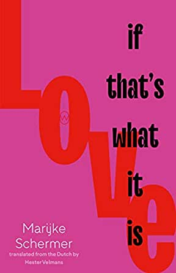

Love, If That’s What It Is by Marijke Schermer (transl. Hester Velmans): One size does not fit all
by Susan Osborne

Susan Osborne/ Fiction in Translation, Fiction Reviews
I’m a sucker for novels about long term relationships, the complicated kind rather than the reasonably straightforward happy ones although they, too, have their turbulent moments. Marijke Schermer’s Love, If That’s What It Is looked right up that particular alley with its story of the breakdown of Terri and David’s 25-year marriage, told from the perspectives of themselves, their lovers and their children over the course of a year or so.
Twenty-five years of bliss in smithereens; Sev doesn’t know which is more mystifying to her – those twenty-five years, or the final deathblow sensation.
Terri walks out on her husband and children telling David she feels suffocated by the life they’ve built together, the shared parenting and domesticity which works like a well-oiled, predictable machine. She has a lover but as she tells David, Lucas is not the cause but the catalyst. David is devastated, uncomprehending. He dearly loves this woman who has apparently been discontented for two years. Their two children want them to stop rowing: 15-year-old Krista, caught up in her own crush, is disgusted by the sex text she finds on her mother’s phone, refusing to speak to her, while Ally, on the brink of puberty, is left contemplating the cuddly toys she knows she’s outgrown and trying to cope with her loneliness. David finds himself a lover online, excited by Sev’s liberated attitude towards relationships and sex, but still trying to understand how things have gone so badly wrong in his marriage. Sev’s happy to listen to David’s angst but Lucas wants nothing to do with Terri’s life, only her body. By the end of the novel a messy kind of resolution is reached. Life goes on, if differently from what might have been hoped for or expected.
She was in love, and after that she simply loved him, and they had a good life, all that time, until suddenly she discovered it was gone
Schermer explores Terri and David’s marital breakdown – dramatic for their family, humdrum and everyday to broader society – shifting perspectives seamlessly from character to character revealing misunderstandings, hurt, puzzlement and occasional moments of happiness in this immersive, absorbing novel. Overarching it all, as the title suggests, is the question what is love? How can we live together when it means entirely different things to different people? And how do we avoid being subsumed into a family, losing sight of ourselves? Writing with great empathy and compassion, Schermer is unafraid to let her characters seem unsympathetic at times. There’s the odd flash of humour running through her quietly powerful, often very subtle novel, expertly translated by Hester Velmans. It reminded me a little of Philp Teir’s The Winter War, set in similar relationship territory. There’s a nice nod to Tolstoy’s famous quote at one point: Happy families are all alike; every unhappy family is unhappy in its own way. I prefer mine unhappy in fiction, but I’ll take the happy variety in real life, please.